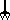

-fs or --fulscreen - fullscreen mode (change configuration)
-d DIR or --data DIR - load data from DIR (default: .)
-fps - show frames per second.
-s or --smooth - smoothed screen (only OpenGL).
-h or --help - short desception of this options
-v or --version - show version and release date
Map editor:
-fs or --fulscreen - fullscreen mode (change configuration)
-d DIR or --data DIR - load data from DIR (default: .)
-m MAP or --mapset MAP - load MAP
-n MAP or --new MAP - create empty MAP
-h or --help - short desception of this options
-v or --version - show version and release date
Coin - when you've got 100 of them, you get extra life.
Life - extra life.
Strength - raise your strength and it's easier to kill enemies.
Speed - raise your speed.
Run - you can run (hold B(X)).
Upper - push you up.
Door
Key - open a door.
Jump Time - jump longer time.
Man - only them don't want to kill you.
Shield - HP up.
Medicine - full health.
Bomb Maker - With that you can plant bombs.
Checkpoint - if you die you'll start from here.
Exit - level exit.
Black Ball - basic enemy.
PaKman - little faster than Black Ball.
Needles - Jeżyk!
Water - going up.
Big Robo - heavy combat robot.
Gozel - strong, fast and smart.
Gozel 2.0 - strongest than Gozel. Running through walls!
Dasher - machine to crash walls.
Rock - heavy and deathly.
Dark Ball - stronger version
Big Ball - huge:]
Cloner - he is as strong as you.
Bomb - explode and destroy tiles.
 Trap - wait for good moment.
Needle - fall on your head.
Ghost - they're dead, so you can't kill them.
Start - start position.
Stop Water - stop flood.
Up Water - raise flood.
Arrows - Move the map
Shift + Arrows - Resize the map
Ctrl + Arrows - Move map fastly
LMB - Place tile
MMB - Works like Q or W & X or like L
RMB - Probe tile
A, D or wheel - Select tile
W, X - Select layer
Q - Change display mode
L - List of all tiles
S - Save
T (over text event ) - Edit
a). If you had installed version 0.0.2, delete file $HOME/.oki